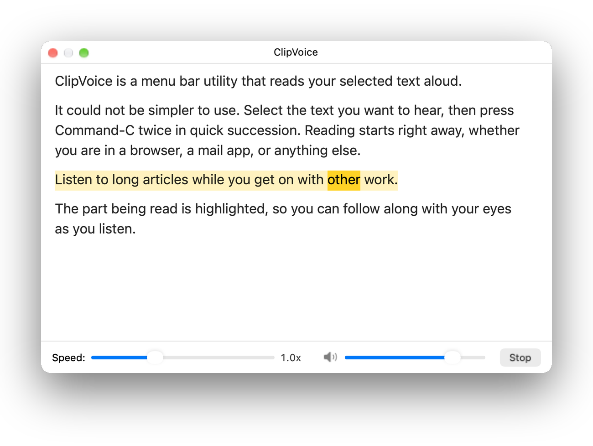

About ClipVoice
ClipVoice is a macOS menu bar app that reads clipboard text or selected text from any application aloud. It works right out of the box with no configuration required.
Key Features
Works Instantly
Built-in Apple text-to-speech engine. Start reading text aloud immediately after installation with no API key required.
High-Quality Voices
Uses Apple's built-in text-to-speech engine with high-quality voices for natural-sounding speech.
⌘C ⌘C to Speak
Select text and quickly press ⌘C twice to start reading aloud. Works from any application.
Monitor Window
Shows the text being read in a window and highlights the current part. Adjust speed and volume as you listen.
Automatic Language Detection
Automatically detects Japanese and English, reading with the appropriate voice. Uses a consistent voice throughout the entire text.
Paragraph Pauses
Inserts natural pauses between paragraphs for comfortable listening, even with long texts.
Services Menu
Integrated with the macOS Services menu. Read selected text directly from other applications.
Monitor Window
Turn on "Show Monitor Window While Reading" in Settings, and a window showing the text being read opens as soon as reading starts.

- The part being read is highlighted, so you can follow along as you listen.
- Adjust the reading speed and volume with the sliders at the bottom of the window.
- Click "Stop" to stop reading.
- The window stays in front of other apps without getting in the way of the app you are working in.
- Use "Transparency" in Settings to make the window translucent.
Open Source
ClipVoice's source code is publicly available on GitHub under the GNU General Public License v3 (GPLv3). The app is distributed as a paid application on the App Store.
Distribution through the App Store is permitted under an additional permission granted under GPLv3 section 7. See the LICENSE for details.
Support
To report bugs or request features, please visit the Issues page on GitHub.